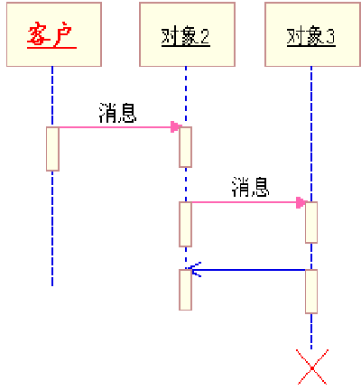

状态图
什么是状态图
状态图通常是对类描述的补充，它说明该类的对象所有可能的状态以及哪些事件将导致状态的改变
状态图只是对单个对象建立模型。表达单个对象所处的可能状态及状态之间的转移。
一个事件可以是另一个对象向它发送的一条消息，或者是满足了某些条件。
状态的改变称为迁移(transition)．一个状态迁移还可以有与之相关的动作，该动作指出状态迁移时应做什么。
状态图的基本符号集
初态： 状态图的起始点。
终态： 状态图的终点。
转移： 用于说明两个对象间存在着某种关系，即如果满足某个条件并当某一事件发生时，对象将从一个状态变迁到另一个状态并同时完成一些活动。
入口动作：系统进入该状态时要发生的动作。
出口动作：系统离开该状态时要发生的动作。
动作：系统处于该状态时要发生的动作。
触发器事件：引起转移发生的事件。
无触发器转移：事件引起的没有相关动作的状态转移，或转移是由于某个状态完成了它的活动所引起
保护条件：当满足这个条件时，转移才能发生
画状态图的步骤
一个对象在活动期内所有可能出现的状态有哪些（列出可能的所有状态）
一个状态向另一个状态的转移（源状态、目标状态、事件、条件、动作）
顺序图
顺序图的元素
顺序图展示了几个对象之间的动态协作关系，显示了对象之间的交互，即系统执行的某一特定时间点所发生的事。
用来显示对象之间发送的消息以及发送消息的时间顺序。
多数情况下，使用顺序图来阐明用例实现，即说明对象如何通过交互来执行全部或部分用例的行为。
可以用一个或多个顺序图来阐明实现用例的对象交互过程。
在典型的组织结构中，主事件流将有一个顺序图，而每个独立的用例分支流都分别有一个顺序图。
对象、生命线
对象(通常是用例、对象、类或参与者)
顺序图是一个二维图形，水平轴为对象的排列，垂直轴表示时间
对象从左至右布在顺序图顶部。
每个对象向下方伸展的虚线称为对象的生命线。用于表示该对象在某段时间内是存在的。两条生命线之间的区域称为活动区,进行信息的传递。

激活
生命线上的窄矩形条被称为激活生命线（也称为控制焦点或方法调用框，表明正在由目标对象／类执行处理，以完成消息)，激活矩形的长度表示激活的持续时间。表示对象处于激活状态。
在对象的生命线之间发送消息的同时即创建激活。
对象在顺序图中的安排
作为交互的发起者，主角实例通常由顺序图中的第一条（最左侧）生命线来表示。
如果在同一顺序图中有多个主角实例，就应尽量使它们位于最左侧或最右侧的生命线。

消息
对象之间的交互通过互发消息来实现。
一个对象到另一个对象的消息用跨越对象生命线的消息表示。
简单消息
表示简单的控制流。用于描述控制如何在对象间进行传递,而不考虑通信的细节。
同步消息（调用）
调用者发出消息后必须等待消息返回(暂停活动),只有消息接收者处理消息的操作执行完毕后(或放弃)返回控制,调用者才可继续执行自己的操作。
一般一个同步消息必有一个配对的返回消息(也可省略)。
同步消息的接收者必须是一个被动对象。
同步方式
客户端与服务器联系后，即等待应答(如ATM)。
应答信息不会涉及到客户凭猜测所做的工作。
应答信息对客户是较重要的。
客户可以确定服务器确实处理了它的请求。
同步方式的时间问题：
如果供应商(计算价格)和销售商(存储价格)都需要1秒钟来处理消息(不考虑网络连接通讯时间)，至少需要4秒。
异步消息
表示异步控制流或并发。
当调用者发出消息后不用等待消息的返回即可继续执行自己的操作。
异步消息的发送者和接收者是并发工作的。
交互图中大量的消息是异步消息。
异步消息的接收者必须是一个主动对象。
异步方式的时间问题。
因为供应商不需要等待销售商(存储价格)的处理所以节省了2秒钟时间。
在许多情况下客户端与服务器联系后，并不需要等待应答或不需要立即应答。
客户建立异步联系后(只需建立对异步回答的监听)可以做自已另外的事情。
总结：
对象可以发消息给自己。
简单消息从一个对象到另一个对象的控制流的转移
同步消息需要等待对方对消息的回答后才能继续自已的操作
异步消息不需要等待对方对消息的回答便可以继续自已的操作
返回消息表示从同步消息创建的激活返回到调用者激活
实例
饮料销售机的一般顺序图（部分）
移动电话
- 拨对方的电话号码
- 按OK送出号码
- 连接移动电话基站
- 基站通过移动网络连接对方手机
- 对方接起移动电话
- 接通谈话
- 断线